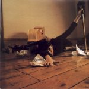
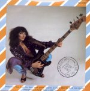

(These lyrics were originally from Andrew Marvick's
The Garden.)
 Misc page
The
Single File page
This
Woman's Work page
Misc page
The
Single File page
This
Woman's Work page
Album/Era
Alphabetical
Gaffaweb
"Ran Tan Waltz"
(original title, The Ran
Tan)
B-side of Babooshka single
Written
by Kate Bush


- Where is she
- When the little thing cries?
- She lies in a bed
- With a friend of mine.
- But some nights
- She'll run back in fright
- If she picks on a dick
- That's too big for her pride.
- Oh! Oh!
- Why did I ever go marry her?
- I was a child!
- I'm holding the baby,
- She's ran-tanning constantly.
- She saw me coming for miles.
- She saw me open wide.
- Four o'clock
- And the key's in the lock.
- And she's been on the win [The word might be "wing".]
- And she's stinking of drink.
- Wakes the kid,
- So I put him to sleep,
- And she's in there all night,
- Doubled over the sink.
- Oh! Oh!
- Why did I ever go marry her?
- I was a child!
- I'm holding the baby,
- She's ran-tanning constantly.
- She saw me coming for miles.
- She saw me open wide.
- Open wide.
- Open wide.
©1980 Kate Bush Music Ltd.
The Single File page
{kind=link}
{kind=link}